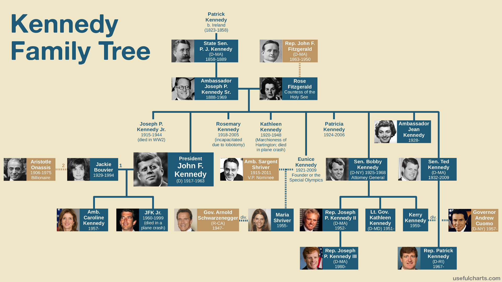

Emotional Intelligence, or EQ, is “the capability of individuals to recognize their own emotions and those of others, discern between different feelings and label them appropriately, use emotional information to guide thinking and behaviour, and manage and/or adjust emotions to adapt to environments or achieve one's goals”.
In other words, it is your ability to be in tune with, and aware of, people’s emotions (including your own). People with high EQ use this awareness to inform their thoughts, behaviours and interactions with others in a beneficial way.
EQ can be broken down into;
I recently watched a nature documentary that followed the trials and tribulations of an alpha chimp called David, and how he dealt with threats to his leadership of his social group. I was impressed by David’s EQ in one particular scenario.
Following a vicious beating from rival, outsider chimps in an attempted coup, David was left for dead when the group moved on to a new area in search of water. After resting and tending to his wounds, David found the group and began to do something he had not done before – he began grooming the other males in the group. He formed closer bonds with them in a personal, social way. The next time the challengers to his throne arrived, these new emotional bonds drove the other males in the group to physically protect him which they had not done previously.
David retained his leadership status not through a rational, IQ driven behaviour (eg using a new weapon/tool to fend off his attackers, like a sharpened stick.) Rather, he used EQ to strengthen the social bonds within his circle, leading to a beneficial outcome and a more stable social hierarchy for all.
The difference between EQ and IQ can be described simply as “street smarts” vs. “book smarts” respectively. It could even be thought of as social skills vs. academic skills.
One key difference is that EQ is “plastic”. You can consciously work on and enhance your EQ skills, while IQ is more “fixed”. While you can increase academic knowledge, it is far more difficult to increase your IQ through study and hard work.
EQ is also more wide-ranging than IQ. EQ can be thought of as a combination of rational and emotional abilities – in a way, “rational” IQ is a sub-set of EQ.
Another difference is that EQ can play a major role in positively influencing happiness, stress management and success in leadership positions. Increasingly, high EQ is accepted as a clearer indicator of success in these areas than IQ alone is.
EQ can be applied to a wider range of tasks. For example, an exceptionally high EQ is beneficial in almost all social and career scenarios, while an exceptionally high IQ is beneficial in a more specific and narrow set of scenarios.
I believe the most important thing about EQ is that it positively influences your happiness – what could be more important than that?
A true understanding of your emotions, and the skill to recognise and control them, can improve you relationships with everyone you interact with. In addition to enabling you to, say, recognise an emotional reaction in yourself so that you can take the time to reconsider your actions, you may will also be able to be more empathetic should you recognise an emotional reaciton in someone else who has not yet devloped that skill. You can now approch a potentially distressing situation fomr a position of understanding the other person rather than blaming or dismiising them
This skillset can be important in your life as it can enable improved relationships in your personal and professional life. You can look forward with confidence to becoming a happier and more successful person each year.
I like to think of HTML as the sheet music of a song, and CSS as a particular performance or interpretation of that song.
The most covered song ever is "Yesterday" by the Beatles. You can still recognise (most!) of the cover versions of the song because the core "information" remains consistent - same lyrics, same melody.
However, the "style" of each interpretation can vary wildly. Extra instruments, different voices and new tempos all change the "feel" of the same basic information. Think of each new cover of "Yesterday" as a new main.css style sheet being linked to the index.html of the original notes and lyrics.
We can "control" the "flow" of how a computer program works - in other words we can determine the order in which specific things happen. One common way of doing this efficiently using a computer is by using a "loop". A loop is a sequence of instructions that is continually repeated until a certain condition is reached
Let's take brushing your teeth as an example of a simple loop, and assume you want to make sure each tooth is brushed twenty times.
We'll start by imagining your teeth are in six distinct areas of your mouth;
We now want to brush each area twenty times
Let's now break that down even further. Let's set a counter to zero, and start with the simple instruction to brush ONE area ONCE.
Let's pick "left side top". After we have brushed this area once, let's add one to the counter. If we repeat this step until the counter reaches twenty, then we have brushed that area exactly as many times as we wanted to. We are "looping" the specific task of brushing once by repeating it until our counter reaches the desired number!
Then we repeat this "loop" for the next area. By being clever with loops, we have now turned one simple instruciton of "brush one area once" into an entire clean mouth!! The pseudo-code for this task might look something like this;

DOM stands for Document Object Model. Here is what each of those words actually means in this context;
The DOM is remarkably similar to a family tree visually, and also in some of the terms that are used to describe elements. Consider the figures below;

The "li" elements in the second figurer would be described as"siblings", much like JFK and Bobby Kennedy. Similarly, the "html" element is considered the "parent" of the "body" element, just like how Ted Kennedy is Patrick Kennedy's parent in the family tree.
Another important term when it comes to the DOM is Nodes. Nodes are anything in the document that we can change; e.g. HTML elements (like <p></p>) OR stuff in elements (like the actual text that a <p></p> contains).
This is a challenging blog post for me to write. The concept of accessing data in arrays vs. objects was something I found challenging during this sprint. I managed to achieve this differentitaion in practice whenever I needed to, mostly through trial and error.
In other words, the differentiation between these two concepts is in my passive vocabulary (i.e. I can understand it when required) but not quite my active vocabulary (I can't yet explain it clearly or confidently to others).
I have spent some time researching and planning a way to describe it here, but have not yet reached a level I am happy with.
This is perhaps a learning in itself that I can share with you - you will be challenged while learning to program, and not everything will "click" immediately. Sometimes you will develop a deep understanding of a new concept quickly, other times you will learn just enough to be able to use it to your advantage for the task at hand. JS objects vs. arrays - we will meet again on my learning journey I am sure!
Functions are like the "building blocks" of computer programming. Each programming language has a bunch of useful building blocks built in already. You can also design your own building blocks depending on what you want to do. These building blocks, or functions, are EXTREMELY useful and the possible applications are endless.
Take the "loop" we spoke about earlier, for brushing our teeth twenty times. Notice we used the words "for" and "while" to describe the situations where we would repeat an action; "for" each area, "while" our counter is less than twenty etc. "For" and "while" loops are two common "built in" building blocks, of programming languages JavaScript.
We then used these to build our own new "function" - let's call it "Brush your teeth". You have now written your very own building block which you can use in new exciting ways.
Next, you might write a new function called "Get ready for work" which includes "Brush your teeth" and other, new functions like "Take a shower" or "Get dressed". Just like how "Brush your teeth" used "for" and "while" as building blocks, "Get ready for work" now uses "Brush your teeth" as a building block.
Already, with this simple example, we are beginning to see how these simple building blocks can be layered upon one another to accomplish increasingly complex tasks - this is the power of functions!